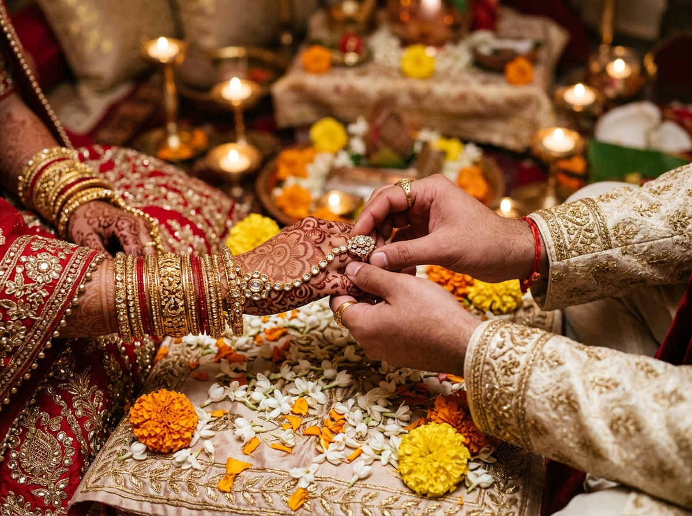
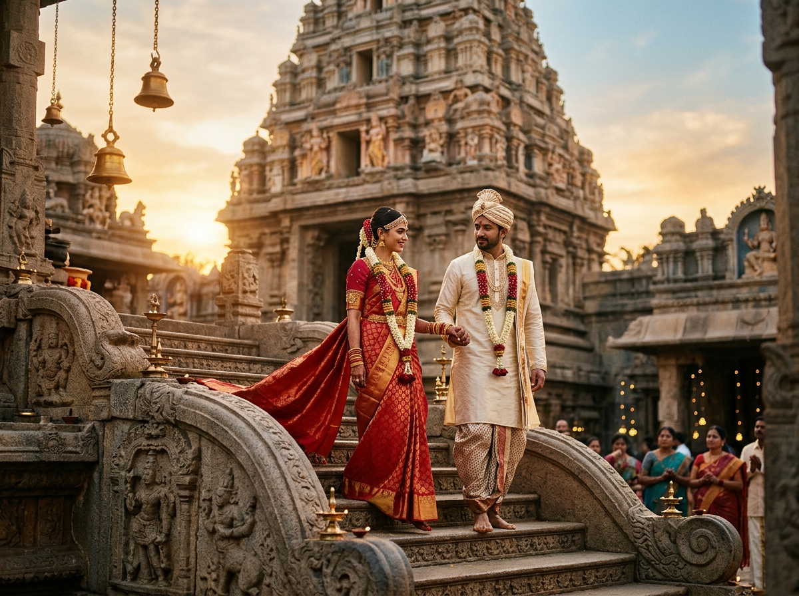
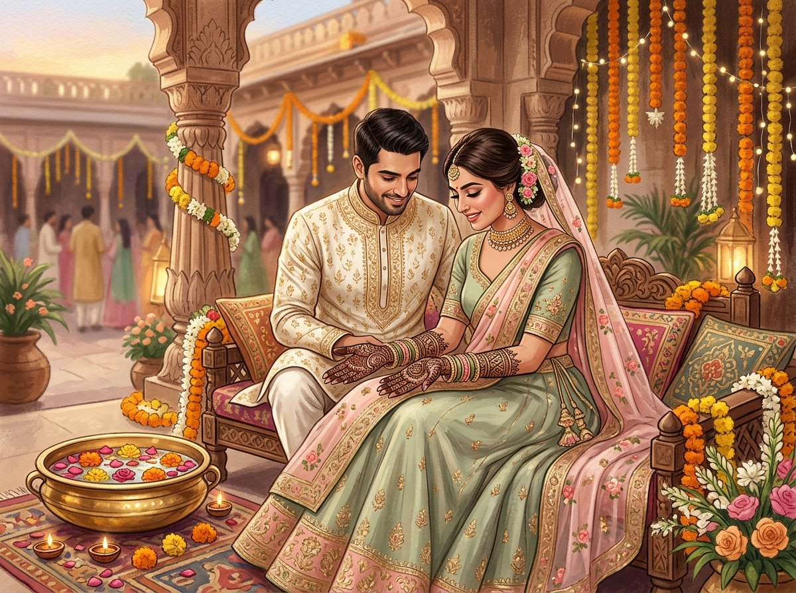
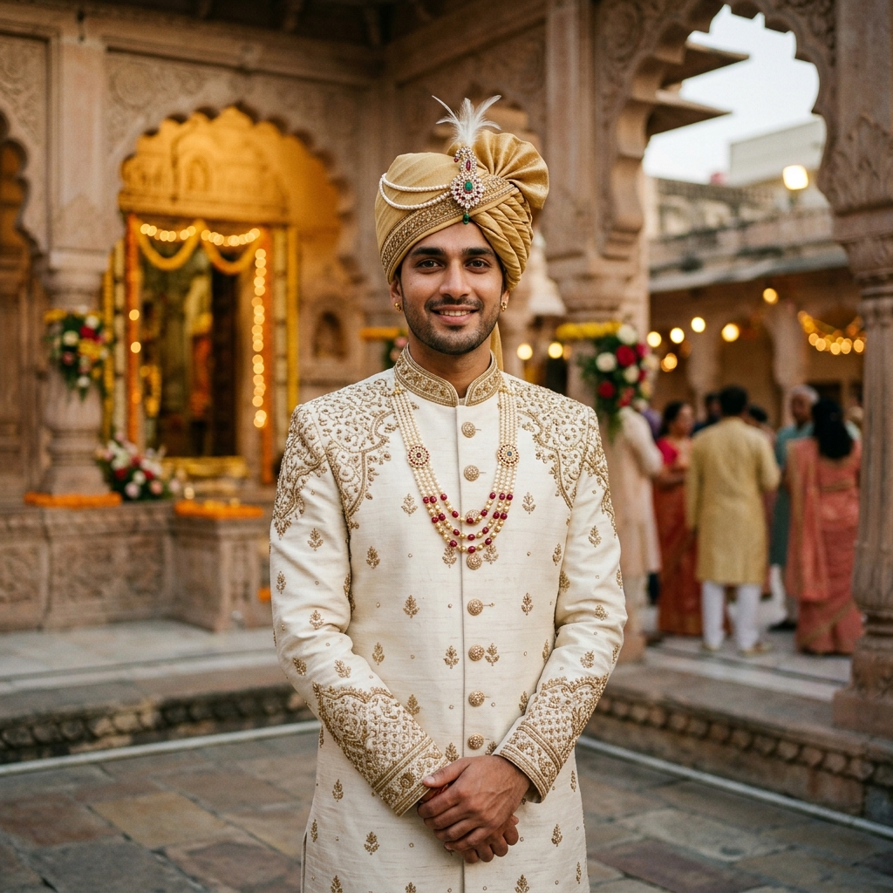
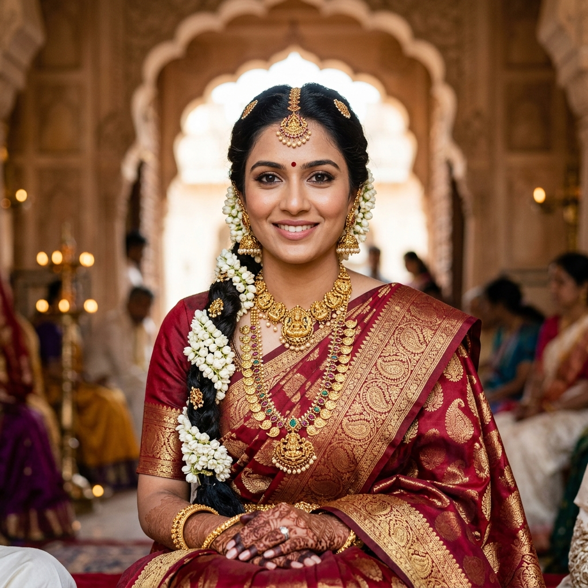
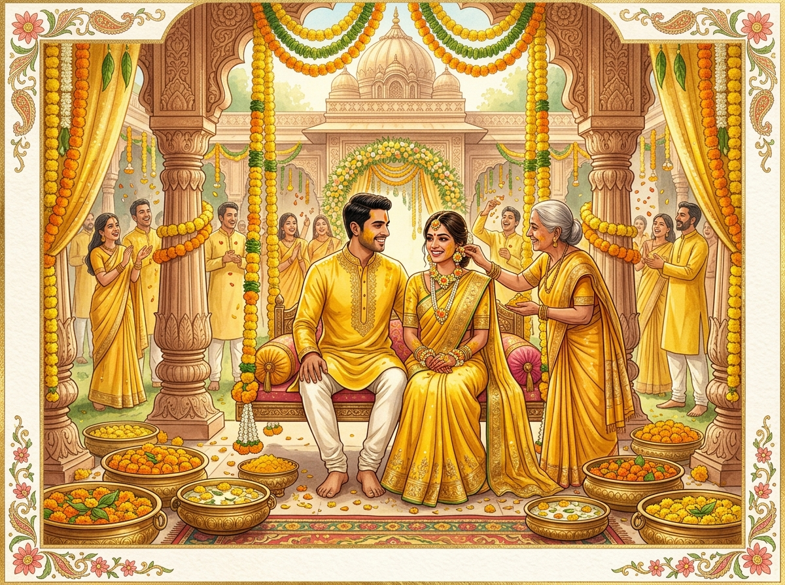
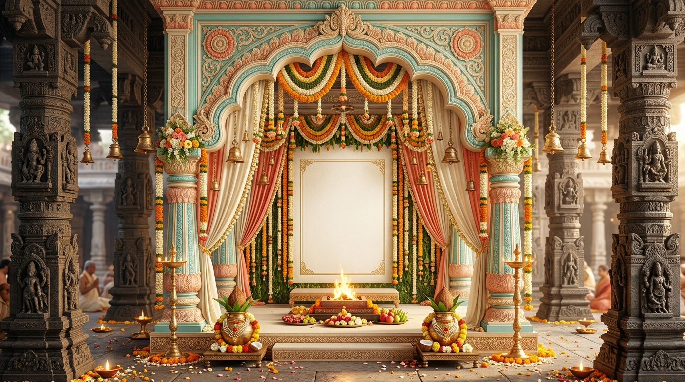
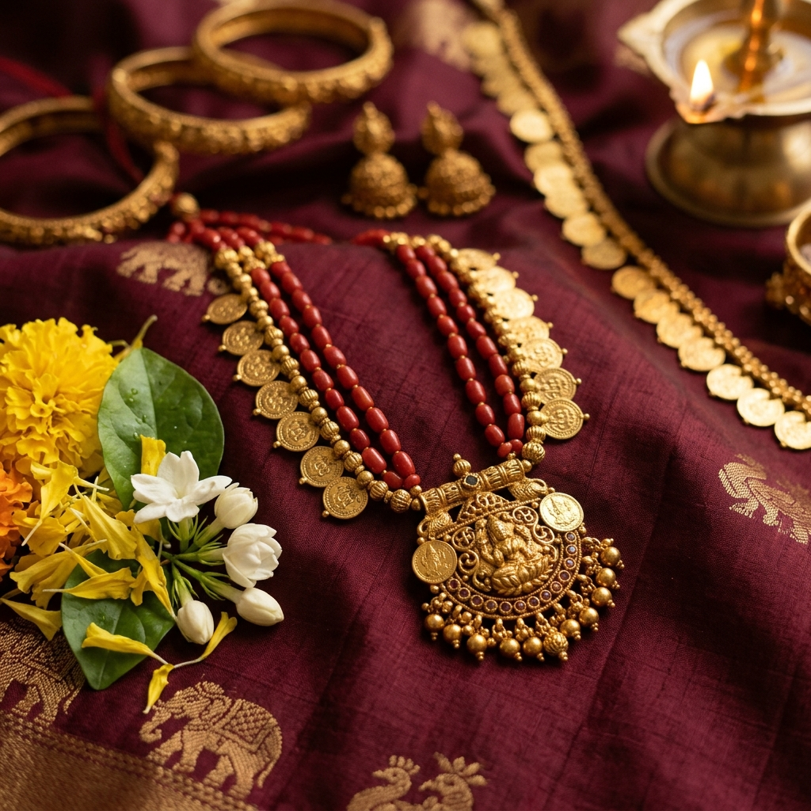
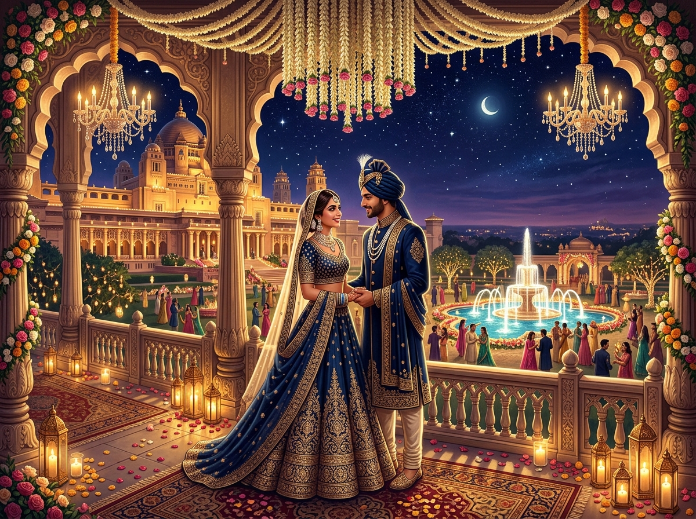

Sacred Visuals
Temple Moments Gallery
Whispers of love captured across Kerala backwaters and sacred pillars.




Two souls uniting under the sacred temple gopuram, surrounded by tranquil Kerala backwaters and divine Vedic blessings.
Lighting the traditional brass Nilavilakku invokes the eternal grace of Lord Guruvayurappan. May this divine flame bring health, harmony, and timeless auspiciousness to Kishan & Divya's sacred marital journey.
Destined by the stars, solemnized by sacred vows.

A quiet storm of calm wisdom and devotion. Rooted in heritage, ready to honor and cherish Divya through every sacred step of the Saptapadi.

Radiant with poise, classical elegance, and kindness. Adorned in pure Kanchipuram silk and temple jewels, embarking on an eternal spiritual voyage.
Every sacred milestone timed with celestial planetary harmony.

Purifying ritual with sacred temple water, fresh turmeric paste, fragrant sandalwood oil, and Vedic chants.

The bride's parents bestow their sacred blessing as the couple takes holy oaths beside the sacred Vedic Agni.

Tying the sacred yellow thread with three knots symbolizing manasa, vacha, and karmana sacred eternal devotion.

Traditional 24-dish vegetarian royal feast served on pristine banana leaves accompanied by flute & veena ragas.
Whispers of love captured across Kerala backwaters and sacred pillars.



Offer your heartfelt Vedic blessings to Kishan & Divya. Delivered directly to the couple's WhatsApp with sacred flower petals!